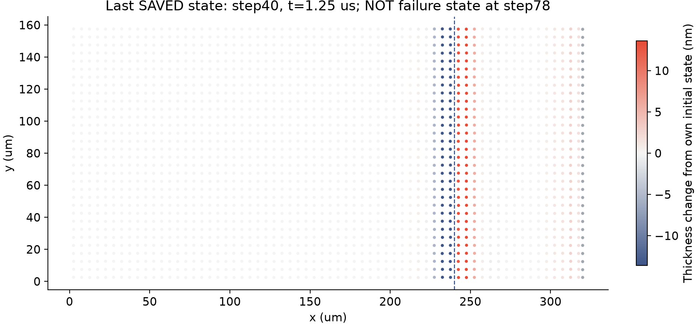
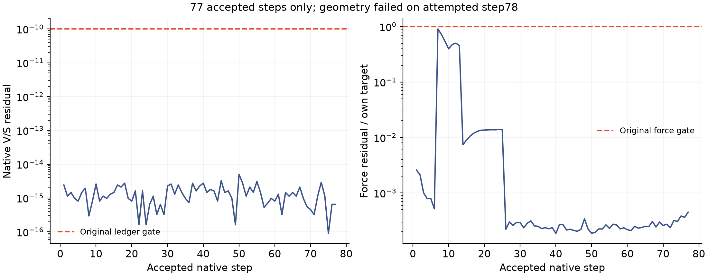

第二组在第78步停止。
本轮尚不能判断收敛。
5微米网格、2112节点、时间步0.03125微秒。原定320步到10微秒，实际接受77步到2.40625微秒，随后原生几何检查报错退出。
这是失败报告。首组160步完成不变，但两组没有在10微秒配齐，因此没有执行本轮时间／空间比较。没有放宽门槛、重启作业或把接受步前缀当成合格终态。
哪里出了问题？
求解器在为运动项计算二阶响应时，会观察轻微扰动后的粒子几何。这次“正向扰动”触发了Voronoi面几何一致性检查。日志指出法向闭合残差超出原几何门槛；这定位了报错环节，尚未证明根因或修复方案。
motion Hessian plus: inconsistent Voronoi face geometry: normal_closure=1.2925674880115229e-09 angle_error=6.4886614255072107e-11 face_length=3.1602585137997662e-06 roundoff_certificate=0.0045151849839007562
已接受步的液量／表活最大账本残差为5.018e-15，能量预算超额最大为0；这些数值不能消除第78步的几何失败，也不能证明连续物理模型正确。
真实保存到了哪里？
77 / 320原生接受步
2.40625 μs接受步推进终点
1.25 μs最后完整保存的粒子帧


下一步怎么做？
先查阅稳健Voronoi构造和数值几何资料，再用有界诊断定位触发检查的几何。任何修复都需保持原几何、守恒和动力学门槛，并在独立记录中验证；不会直接改阈值后重跑长作业。原10／50／200微秒、物理通量／牵引力和完整C1目标保留。